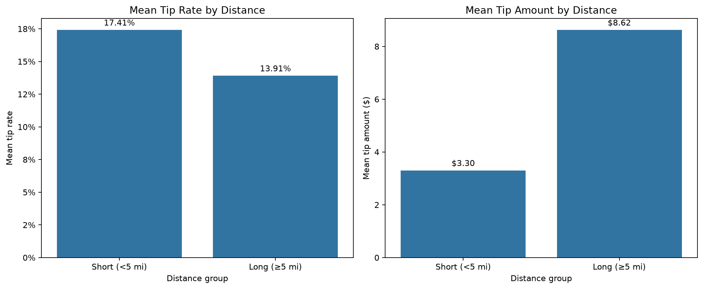

NYC Yellow Taxi 카드 팁 분석
자동 생성: 2026-07-21T18:22:29+09:00
데이터 준비
분석 전 행 수
4,090,836
Pandas 로딩
0.152초
Polars 로딩
0.053초
결측 셀
4,776,855
필터 단계별 행 수
| 단계 | 남은 행 | 제외 행 |
|---|---|---|
| remove_exact_duplicates | 4,090,836 | 0 |
| card_payment_only | 2,727,585 | 1,363,251 |
| pickup_in_2026_05 | 2,727,575 | 10 |
| positive_trip_distance | 2,706,192 | 21,383 |
| positive_fare_amount | 2,706,037 | 155 |
| nonnegative_tip | 2,706,037 | 0 |
| positive_base_amount | 2,706,037 | 0 |
| tip_rate_0_to_1 | 2,704,399 | 1,638 |
| duration_0_to_180_min | 2,658,940 | 45,459 |
거리·주중/주말 분석
| 거리 그룹 | 운행 수 | 평균 팁 금액 | 평균 팁률 |
|---|---|---|---|
| long_ge_5mi | 476,632 | $8.62 | 13.91% |
| short_lt_5mi | 2,182,308 | $3.30 | 17.41% |
장거리 평균 팁 금액이 단거리보다 $5.32 높았다. 장거리 평균 팁률이 단거리보다 3.50%p 낮았다.

| 구분 | 운행 수 | 평균 팁률 |
|---|---|---|
| 주중 | 1,892,170 | 16.71% |
| 주말 | 766,770 | 16.96% |
주말 평균 팁률이 주중보다 0.25%p 높았다.
시간대별 인터랙티브 차트
통계 검정
p-value가 0.05보다 작아 단거리와 장거리의 평균 팁률 차이는 통계적으로 유의합니다.
- t 통계량: 240.3767
- p-value: < 0.001
- 평균 팁률 차이: 3.50%p
- Cohen's d: 0.443
ML Pipeline
Accuracy
0.5613
F1
0.6046
ROC-AUC
0.6394
SGDClassifier(loss='log_loss')을 사용했으며 전처리와 분류기를 하나의 sklearn Pipeline으로 저장했습니다.
Accuracy 0.5613, F1 0.6046, ROC-AUC 0.6394로 측정됐다. 이 값은 현재 입력 특성과 평가 표본에서의 예측 성능이며 인과관계를 의미하지 않는다.